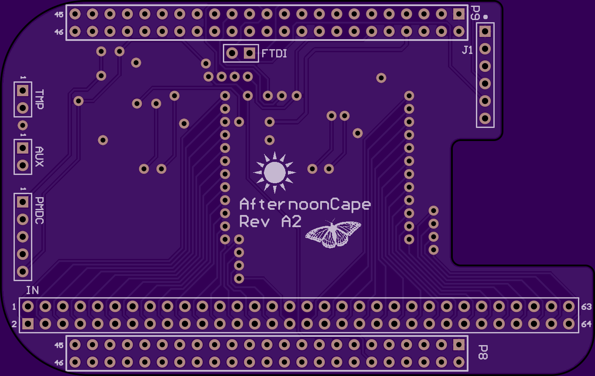
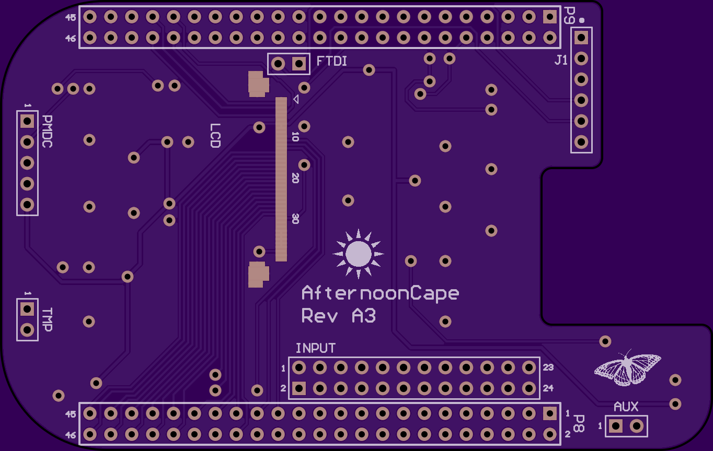

afternoon-cape
The power is TOO DAMN HIGH!
afternoon-cape
A Power Monitor (PM aka "Afternoon") cape for the BeagleBone Black. The AfternoonCape utilizes the INA226 instrumentation amplifier to accurately sample and monitor voltage, current, and power consumption of a given supply.


This repository contains:
- Altium library, schematic, and board files
- PCB gerbers and drill files
- Bill of materials
- Linux device driver for CD74HC4067, INA226, TMP441
- GUI source
Usage:
- loadmod afternoon-cape.ko EVM=am437xGP.txt
- Bash shell scripts using sysfs GPIO
- PMDC I2C protocol
Revision History:
- Alpha releases A1 (TI mux), A2 (ADI mux), A3 (discrete channel INAs)
- Beta releases B1 (TI mux)
A1:


- MUX_SEL0 (P8, pin 12) - GPIO1_12 (0x44e10830, 0x30 offset, #44)
- MUX_SEL1 (P9, pin 23) - GPIO1_17 (0x44e10844, 0x44 offset, #49)
- MUX_SEL2 (P9, pin 27) - GPIO3_19 (0x44e109a4, 0x1a4 offset, #115)
- MUX_SEL3 (P9, pin 12) - GPIO1_28 (0x44e10878, 0x78 offset, #60)
- INA_42 handles channels 0 through 15
- INA_43 handles channels 16 through 31
- Accuracy +/- %
A2:


- MUX_SEL0 (P8, pin 12)
- MUX_SEL1 (P9, pin 23)
- MUX_SEL2 (P9, pin 27)
- MUX_SEL3 (P9, pin 12)
- INA_42 handles channels 0 through 15
- INA_43 handles channels 16 through 31
- Accuracy +/- %
A3:


- INA42-INA4F handles channels 0 through 11
- Accuracy +/- %
B1: